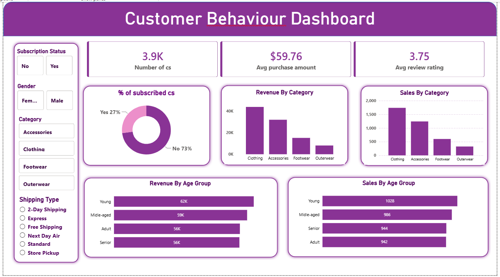

Who drives revenue?
Compare spending and revenue contribution across customer demographics and segments.
An end-to-end e-commerce analytics project focused on spending patterns, customer segments, product performance, discounts, subscriptions and category revenue.
The project examines how customers spend, which products and categories drive sales, and which customer behaviors are associated with stronger commercial value.
Analyze revenue, purchase volume and category-level performance.
Understand subscription, repeat-purchase and demographic patterns.
Identify high-performing products, ratings and discount dependence.
Customer ID · Age · Gender · Location · Category · Item · Season · Size · Color
Purchase Amount · Rating · Subscription · Shipping · Discounts · Previous Purchases · Payment · Frequency
Compare spending and revenue contribution across customer demographics and segments.
Find top products by sales, review rating and discount dependence.
Compare subscriber and non-subscriber counts, average spend and total revenue.
Segment customers into new, returning and loyal groups using previous purchases.
Imported the CSV with Pandas and inspected structure, descriptive statistics and missing values.
Filled missing review ratings using category-level medians and standardized column names.
Created age groups and purchase-frequency days, then removed the redundant promo-code field.
Loaded the cleaned data into a SQL workflow and queried customer, product and revenue patterns.
Grouped purchase value by gender to compare contribution to total revenue.
$157,890 male · $75,191 femaleCalculated average product ratings and ranked products to identify the top five.
Gloves · 3.86 avg ratingUsed previous purchases to classify customers as New, Returning or Loyal.
3,116 loyal customersUsed ROW_NUMBER() over each category to identify the top three products.
Top 3 within each categoryThe purchase-history segmentation produces a clear concentration in the Loyal segment, making repeat-customer behavior an important lens for revenue and subscription patterns.
“Loyal” is defined in the project's SQL segmentation as more than 10 previous purchases.
Clothing contributes the largest category revenue, followed by Accessories at $74,200.
The Young group contributes the highest revenue among the four age groups, while the groups remain relatively close overall.
1,053 customers are subscribers. Non-subscribers contribute $170,436, about 73% of total revenue.
Express-shipping purchases average $60.48 versus $58.46 for Standard shipping.
Gloves, Sandals, Boots, Hat and Skirt form the top five by average review rating.
3.86 → 3.78Hat has the highest discount rate, followed by Sneakers, Coat, Sweater and Pants.
Hat · 50.00%Top products were ranked inside each category using a window function rather than one global ranking.
ROW_NUMBER() by categoryThe project identified 839 high-spenders whose discounted purchases exceeded the overall average purchase amount.
839 customersThe Power BI dashboard combines KPI cards, subscription filters, category analysis, age-group comparisons and customer behavior into a single interactive view.

Subscription Status · Gender · Category · Shipping Type
Revenue by Category · Sales by Category · Revenue by Age Group · Sales by Age Group · Subscription Mix
Male customers generated $157,890 versus $75,191 from female customers.
3,116 of 3,900 customers fall into the Loyal segment under the project's purchase-history definition.
Non-subscribers generate about 73% of total revenue despite similar average purchase values.
Clothing contributes about 44.7% of the dataset's $233,081 total revenue.
Promote exclusive subscriber benefits to convert more of the existing customer base.
Reward repeat buyers and use the large Loyal segment as a base for retention and upsell initiatives.
Balance discount-driven sales with margin control, especially for products with high discount rates.
Focus marketing attention on high-revenue age groups and customers associated with higher-value shipping behavior.
Exploration, missing-value treatment, standardization and feature engineering.
Customer, product, revenue, subscription and segmentation analysis.
KPI cards, filters and category/customer visual analysis.
Customer shopping transactions with demographic, purchase and behavioral fields.